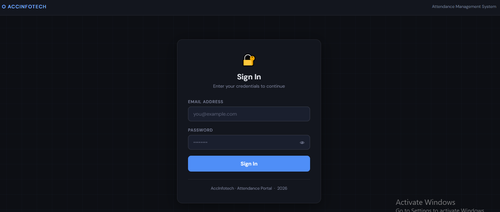
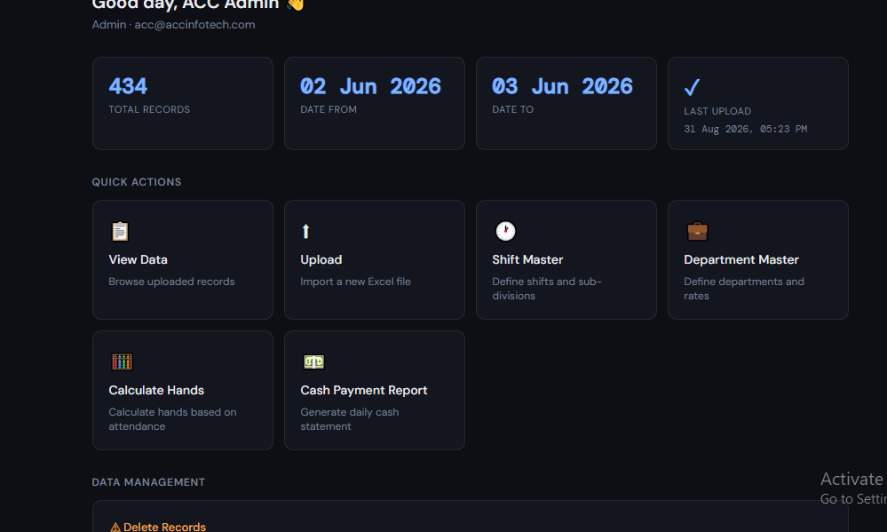
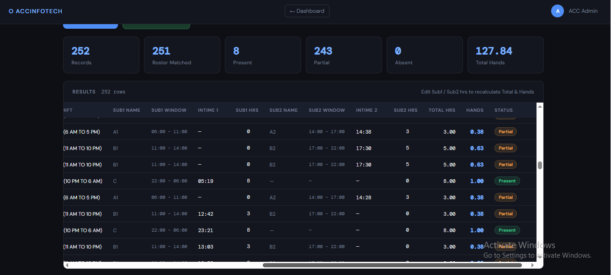
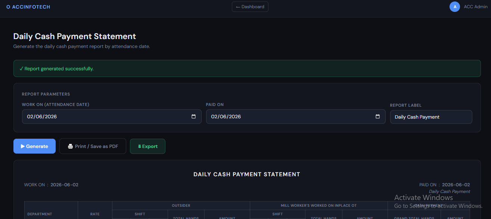
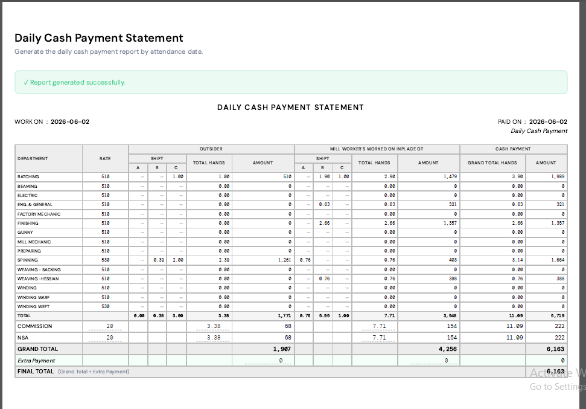

Attendance Analysis & Daily Payment Report Generator
An automated attendance analysis system built on Google Sheets and Apps Script that turns daily attendance data into per-day payment reports, with complex table layouts and unified PDF/Excel export.
Features
- Automatic attendance analysis from daily entries
- Per-day payment report generation, department-level breakdowns
- Complex, formatted table layouts inside Google Sheets
- Unified PDF and Excel export via base64 Blob downloads
Screenshots





Technologies Used
Google Sheets, Google Apps Script, PDF/Excel export via base64 Blob downloads
Challenges & Learnings
The hardest part of this project was attendance analysis and work with only single punches of the daily workers to build a automated system.